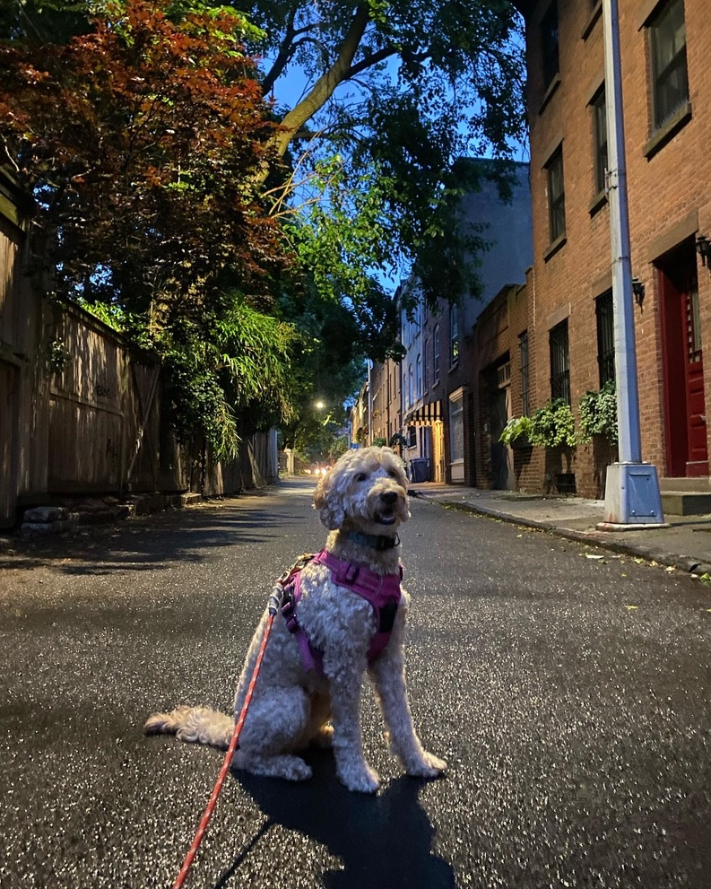
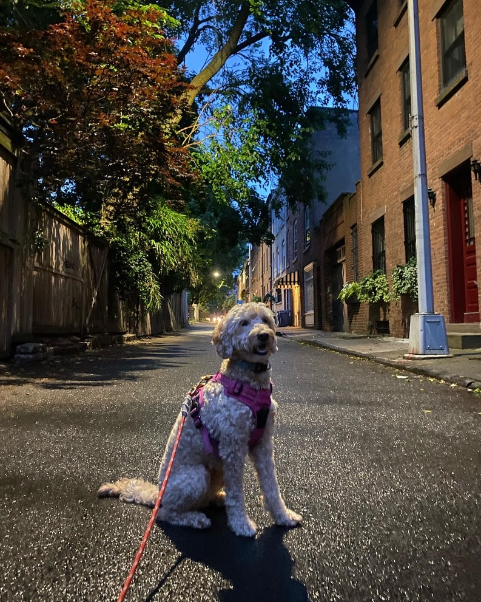
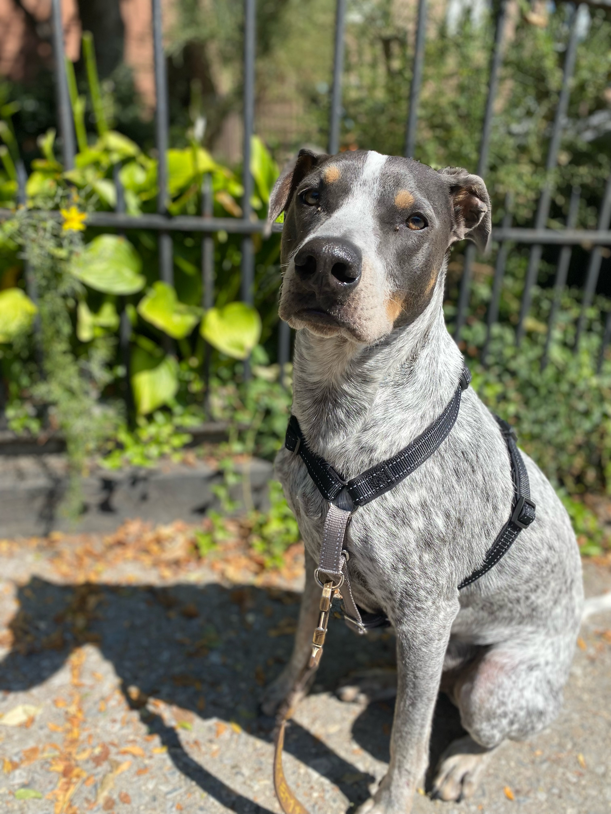
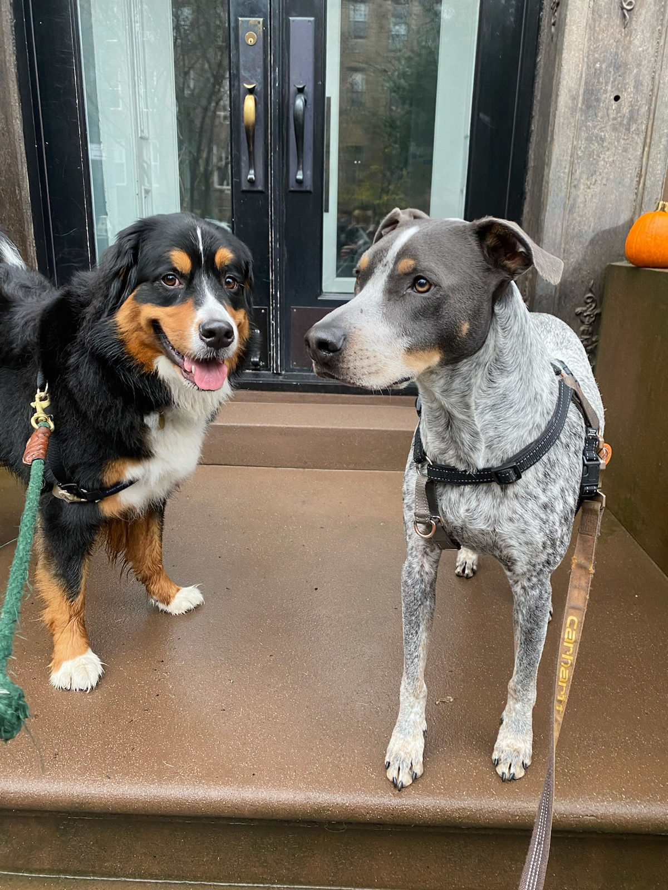
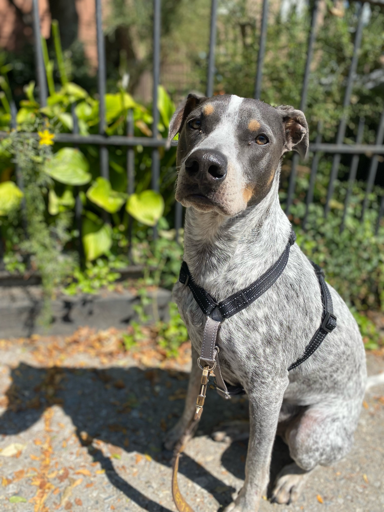
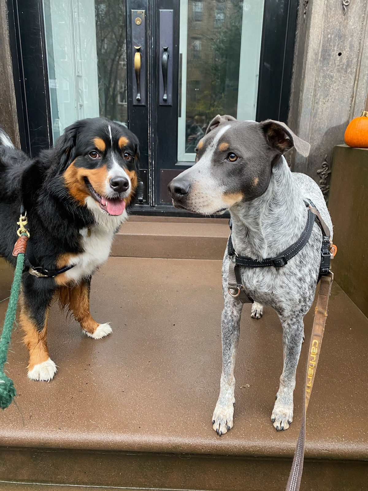
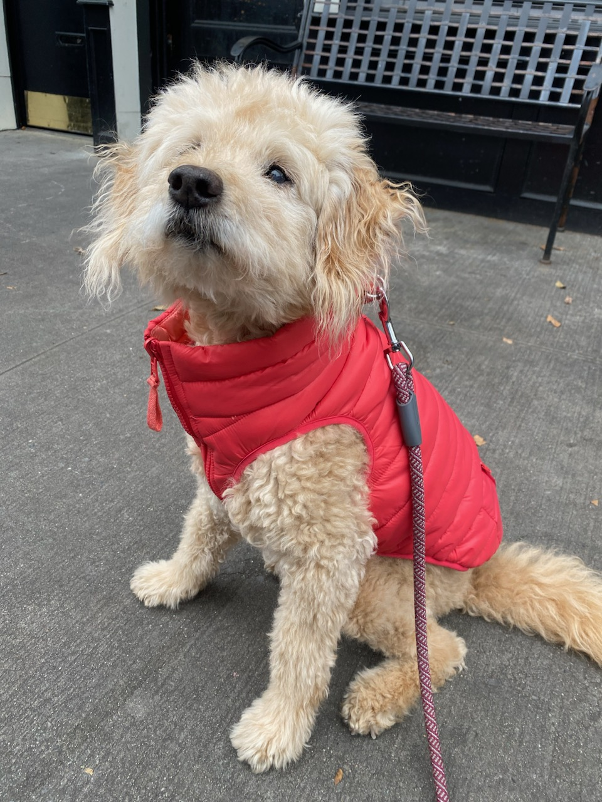
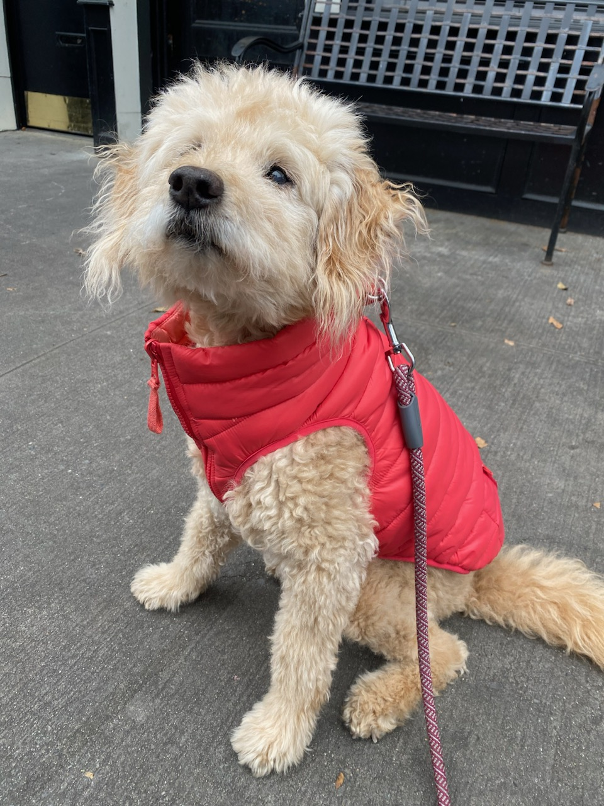

Julie & Ralph


Beau is the absolute best! Like many pet owners, my pup, Ralph, means the world to me and it takes a lot for me to trust someone. Beau always keeps me updated on the walks and any new friends that Ralph makes. His daily recap texts include pictures which I joke is like I hired a professional photographer as an added bonus. I think the favorite part of Ralph's day is when Beau arrives, he knows he'll get fresh air, lots of love and a few treats.

 

 

 
